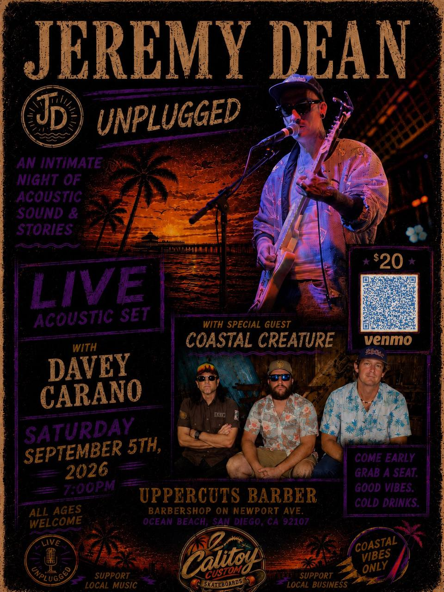
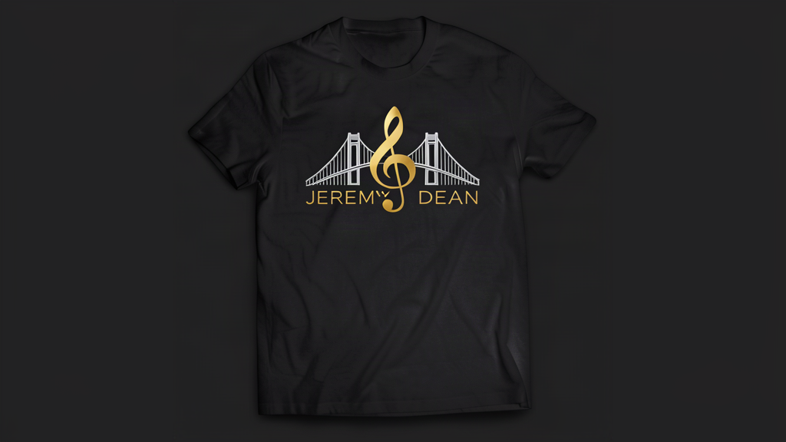
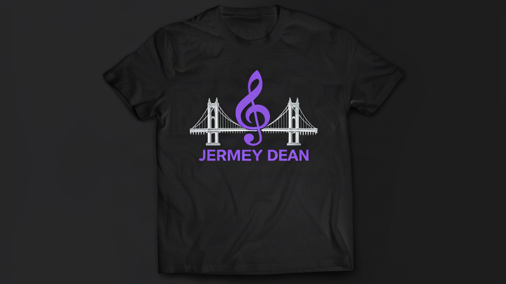
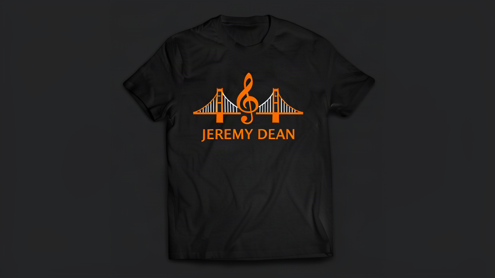
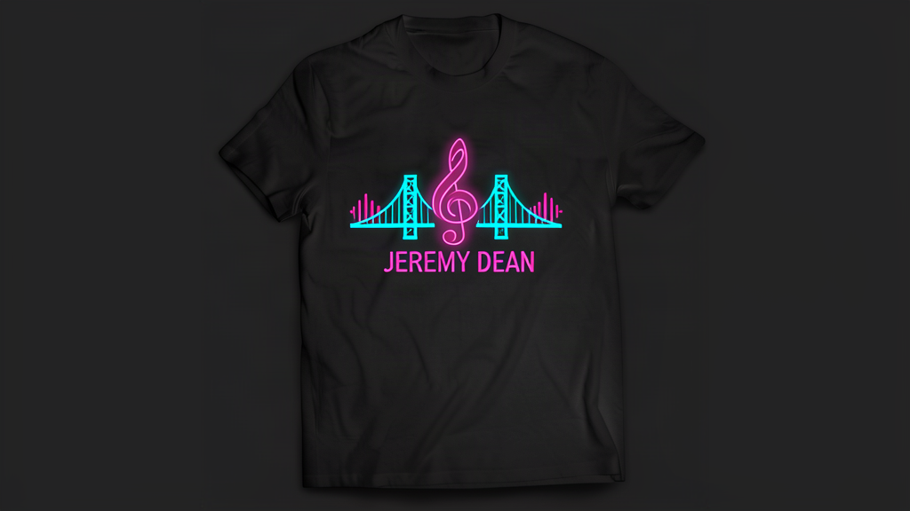

Ocean Beach, San Diego
Jeremy Dean
Independent musician. Acoustic sets, dark alternative rock, industrial electronic, cinematic trip-hop.
About
Dark, romantic, confrontational
Jeremy Dean is an independent musician based in Ocean Beach, San Diego. His sound blends dark alternative rock, industrial electronic music, cinematic trip-hop, emo-grunge, and hip-hop.
The music is emotionally raw but carefully structured. Moving quickly between intimate, restrained passages, tense rhythmic sections, sharp rap entries, and large cathartic hooks. Production features heavy live drums, deep distorted synth bass, cold electronic textures, atmospheric pads, and dramatic silence.
His writing is deeply personal and direct. Common themes include loyalty, betrayal, survival, love, abandonment, self-destruction, faith, identity, and redemption. Sacred imagery alongside blunt everyday language, balancing poetic symbolism with lines that feel like an unfiltered confrontation.

Next Show
Jeremy Dean Unplugged
Merch
11 logos, 18 products

Gold Logo Tee
Purple Logo Tee
Orange Logo Tee
Neon Pink TeeListen